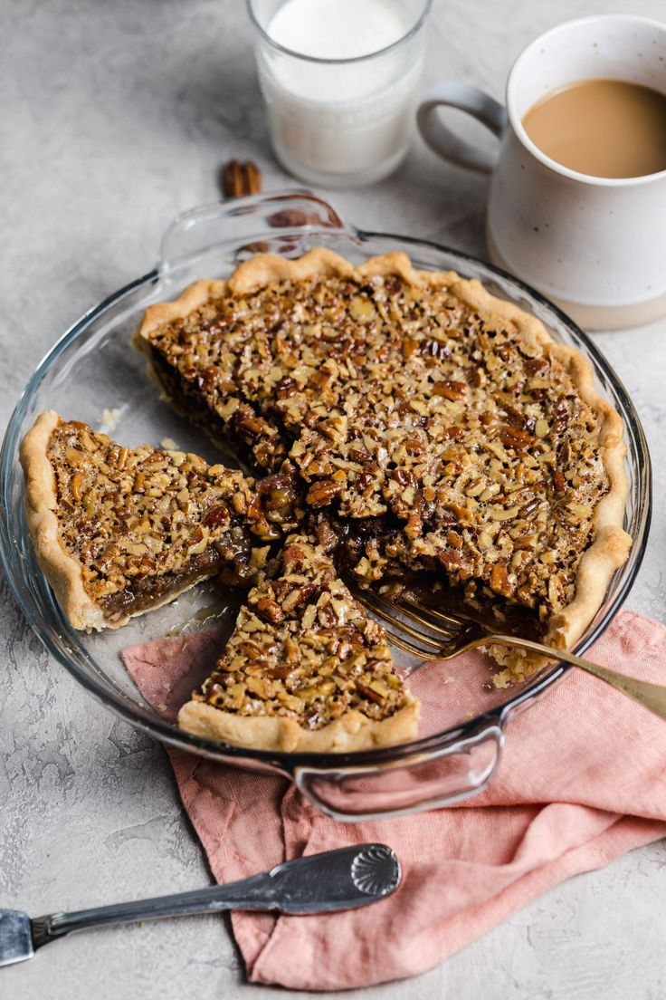

Description

Fugiat omnis dolor commodi ut voluptatem eum reprehenderit. Omnis et non sunt adipisci autem. At iure molestiae sed ad voluptas. Qui consequuntur soluta eos eos dolorem repellat reiciendis. Est sed quam eum similique accusamus. Expedita corporis consectetur corporis.
Ingredients
- 300g sweet shortcrust pastry
- 100g salted butter, softened
- 100g light brown muscovado sugar
- 3 eggs
- 150ml golden syrup
- 1 tsp vanilla extract
- 300g pecans, 200g chopped and 100g left whole
- 1/4 tsp sea salt flakes
- vanilla ice cream or crème fraîche, to serve
Steps
- Roll the pastry out to the thickness of a 20p coin and line a 23cm x 4cm deep round tart tin, then trim, leaving a 2cm overhang. Prick the base all over with a fork and chill for 20 minutes. Heat the oven to 190C/fan 170C/gas 5. Line the pastry shell with baking paper and fill with baking beans.
- Bake for 10 minutes then remove the paper and beans and cook for 5-8 minutes or until the shell looks biscuity and there are no raw patches of pastry.
- To make the filling, use electric beaters to whisk together the butter and sugar for a few minutes until a little paler in colour. Whisk in the eggs, one at a time, followed by the golden syrup, vanilla and chopped pecans. Pour into the pastry case and arrange the whole pecans on top in a single layer. Sprinkle over the sea salt flakes.
- Bake for 10 minutes, then reduce the oven temperature to 180C/fan 160C/gas 4 and cook for another 35 minutes until risen and just set. Cool to just warm and serve with a scoop of vanilla ice cream or crème fraîche.